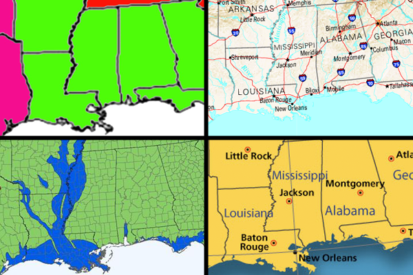
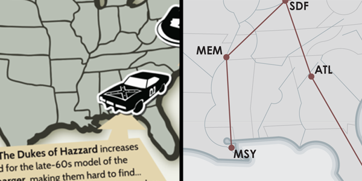

by Daniel Huffman, founder and semi-absentee curator | somethingaboutmaps@gmail.com
The aesthetic and design choices available to cartographers are near infinite. As we strive to craft something that looks good and fits with the themes we want to convey, we can select from a massive variety of colors, typefaces, line weights, symbols, and more. This flexibility allows for the creativity and expression that lies at the heart of the discipline, and it makes every map unique.
But while each map may vary in so many of these particular dimensions, one thing that rarely changes is the linework: the shape of the coastline, the path of a river, the boundary of a nation; these things usually look the same from map to map. The lines may be given different colors or widths, but the paths they take remain fairly similar. They are twisted around a bit on account of changes in projection, and simplified more or less based on the map scale, but they generally follow reality as well as they can. This generic, accurate-as-possible look to the linework is very much a part of the standard Cartographic Aesthetic described by my colleague Marty Elmer.
But the power of cartography (and its purpose) is that it’s not realistic. It’s highly abstracted and generalized, and reality went out the window once we decided to show a road as being red and give it a stroke width that makes it look hundreds of miles wide, or to replace a city with a black circle. We stylize so many other things on maps, but playing around with the actual shapes of states, islands, or roads, is uncommon. I’d like that to change. I want to shake things up, because I think that people become too familiar with the shapes of states and countries and the like. They’re default, unobtrusive. It’s hard to call attention to places when they always look the same.
I want linework like typefaces. Consider how the shape of an “M” varies significantly as you go from one typeface to another, yet we still understand that they all refer to the same thing. Each one expresses a different feeling or character, while remaining true to the same basic concept.

I want us to think of cartographic linework this way. When I make a map of the United States, I want to be able to choose different renderings of the coastline, each unique, but each referring back to the same geographic reality. We are not satisfied with having only one typeface, or only making our polygons one color, with one stroke width. Why should we limit ourselves when it comes to linework? We must generalize linework for aesthetics, not merely clarity and scale.
I’d like to introduce you to Project Linework, which is an attempt at a solution. Project Linework aims to provide a library of free, public-domain sets of vector linework for cartographic use. Each is unique, and each is ready for you to use in your mapping projects. We’ve got three sets so far, and we hope you’ll consider contributing. Click here to visit the project page, where you can download linework and learn more about contributing.
I’m not sure where the project will go from here. If we get a few more contributions, and there’s some interest in these things, maybe I’ll see about getting a website together. I’m trying not to be too top-down with this, instead letting it develop organically. Hope you’ll come along for the ride.